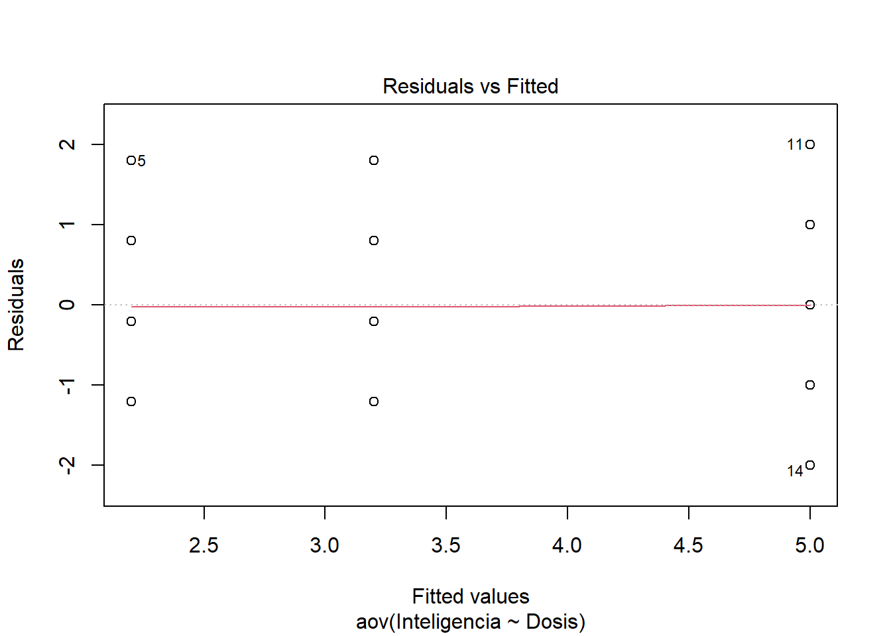
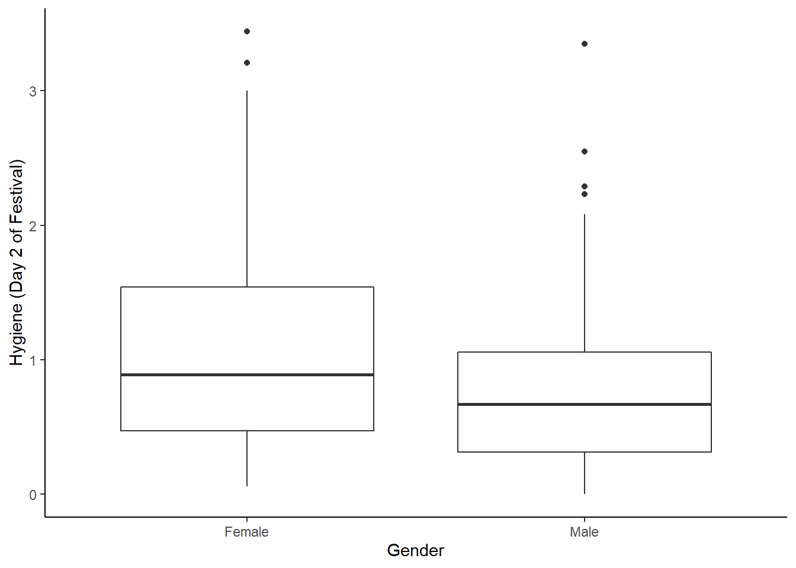

Capítulo 10 Otros ANOVA
En este capítulo vamos a revisar que otros tipos de ANOVA podemos realizar.
10.1 Tipos de ANOVA
Revisa este video (13') y trata de responder:
- ¿De qué depende el tipo de ANOVA que utilicemos?
10.2 Ejemplo de ANOVA factorial
Ahora vamos a hacer un análisis de ANOVA factorial. Primero seteamos nuestro directorio de trabajo y cargamos las librerías que necesitemos (si no las tienes instaladas debes instalarlas).
setwd("C:/Users/Usuario/Documents/JoseLuis/UTalca_2018/Estadistica_Bookdown/estadistica")
library(ggplot2)
library(Hmisc)
library(Rmisc)
library(effsize)
library(pastecs)
library(reshape2)
library(car)
library(effsize)Primero importamos el set de datos y le damos una mirada.
gogglesData <- read.csv("data/goggle_beer_effect.csv", header = TRUE)
head(gogglesData)## gender alcohol attractiveness
## 1 Female None 65
## 2 Female None 70
## 3 Female None 60
## 4 Female None 60
## 5 Female None 60
## 6 Female None 55Enseguida es útil decirle a R que variables corresponden a factores.
gogglesData$gender <- factor(gogglesData$gender)
gogglesData$alcohol <- factor(gogglesData$alcohol)
str(gogglesData)## 'data.frame': 48 obs. of 3 variables:
## $ gender : Factor w/ 2 levels "Female","Male": 1 1 1 1 1 1 1 1 1 1 ...
## $ alcohol : Factor w/ 3 levels "2 Pints","4 Pints",..: 3 3 3 3 3 3 3 3 1 1 ...
## $ attractiveness: int 65 70 60 60 60 55 60 55 70 65 ...También podemos cambiar el nombre de las variables si nos facilita la tarea de hacer gráficos por ejemplo.
levels(gogglesData$alcohol)[match("None", levels(gogglesData$alcohol))] <- "P0"
levels(gogglesData$alcohol)[match("2 Pints", levels(gogglesData$alcohol))] <- "P2"
levels(gogglesData$alcohol)[match("4 Pints", levels(gogglesData$alcohol))] <- "P4"
str(gogglesData)## 'data.frame': 48 obs. of 3 variables:
## $ gender : Factor w/ 2 levels "Female","Male": 1 1 1 1 1 1 1 1 1 1 ...
## $ alcohol : Factor w/ 3 levels "P2","P4","P0": 3 3 3 3 3 3 3 3 1 1 ...
## $ attractiveness: int 65 70 60 60 60 55 60 55 70 65 ...Fíjate que el nivel base quedó al final.
levels(gogglesData$alcohol)## [1] "P2" "P4" "P0"Necesitamos reordenar los niveles para este factor.
gogglesData$alcohol <- factor(gogglesData$alcohol,
levels = c("P0", "P2", "P4"))
levels(gogglesData$alcohol)## [1] "P0" "P2" "P4"Luego, podemos hacer algunos gráficos para visualizar los efectos. Por ejemplo, podemos hacer un histograma de los valores de atractivo en función del género y del consumo de alcohol.
fig_boxplot1 <- ggplot(gogglesData, aes(alcohol, attractiveness)) +
geom_boxplot() +
facet_wrap(~gender) +
labs(x = "Consumo de alcohol", y = "Atractivo promedio (%)")
fig_boxplot1
Este mismo gráfico, valores de atractivo en función del género y del consumo de alcohol, se puede hacer en formato de líneas.
fig_linesplot1 <- ggplot(gogglesData, aes(alcohol, attractiveness, colour = gender)) +
stat_summary(fun.y = mean, geom = "point") +
stat_summary(fun.y = mean, geom = "line", aes(group= gender)) +
stat_summary(fun.data = mean_cl_boot, geom = "errorbar", width = 0.2) +
labs(x = "Consumo de alcohol", y = "Atractivo promedio (%)", colour = "Gender") ## Warning: `fun.y` is deprecated. Use `fun` instead.
## `fun.y` is deprecated. Use `fun` instead.fig_linesplot1
O en formato de barras.
fig_barplot1 <- ggplot(gogglesData, aes(alcohol, attractiveness, fill = gender)) +
stat_summary(fun.data = mean_cl_normal, geom = "errorbar",
position=position_dodge(width=0.90), width = 0.2) +
stat_summary(fun.y = mean, geom = "bar", position="dodge") +
labs(x = "Consumo de alcohol", y = "Atractivo promedio (%)", fill = "Gender") ## Warning: `fun.y` is deprecated. Use `fun` instead.fig_barplot1
Estos gráfico son muy informativos. ¿Que ves? Una manera de visualizar los efectos que estamos estudiando podemos separar los efectos. Esto es, podemos visualizar los niveles de atractivo en función de un sólo factor.
Por ejemplo, podemos visualizar el efecto del género en los niveles de atractivo. Este efecto corresponde al efecto principal del género.
fig_bargender1 <- ggplot(gogglesData, aes(gender, attractiveness)) +
stat_summary(fun.y = mean, geom = "bar",
fill = "White", colour = "Black") +
stat_summary(fun.data = mean_cl_normal, geom = "pointrange") +
labs(x = "Género", y = "Atractivo promedio (%)") +
scale_y_continuous(breaks=seq(0,80, by = 10))## Warning: `fun.y` is deprecated. Use `fun` instead.fig_bargender1
También podemos visualizar el efecto del consumo de alcohol en los niveles de atractivo. Este efecto corresponde al efecto principal del consumo de alcohol.
fig_barbeer1 <- ggplot(gogglesData, aes(alcohol, attractiveness)) +
stat_summary(fun.y = mean, geom = "bar",
fill = "White", colour = "Black") +
stat_summary(fun.data = mean_cl_normal, geom = "pointrange") +
labs(x = "Consumo de alcohol", y = "Atractivo promedio (%)") +
scale_y_continuous(breaks=seq(0,80, by = 10))## Warning: `fun.y` is deprecated. Use `fun` instead.fig_barbeer1
Antes de hacer los análisis propiamente tal podemos describir un poco los datos y evaluar los supuestos de la estadística parámetrica.
describ <- by(gogglesData$attractiveness,
gogglesData$gender, stat.desc)
lapply(describ, round, 2)## $Female
## nbr.val nbr.null nbr.na min max range sum median
## 24.00 0.00 0.00 50.00 70.00 20.00 1445.00 60.00
## mean SE.mean CI.mean.0.95 var std.dev coef.var
## 60.21 1.29 2.68 40.17 6.34 0.11
##
## $Male
## nbr.val nbr.null nbr.na min max range sum median
## 24.00 0.00 0.00 20.00 85.00 65.00 1355.00 60.00
## mean SE.mean CI.mean.0.95 var std.dev coef.var
## 56.46 3.78 7.81 342.35 18.50 0.33describ <- by(gogglesData$attractiveness,
gogglesData$alcohol, stat.desc)
lapply(describ, round, 2)## $P0
## nbr.val nbr.null nbr.na min max range sum median
## 16.00 0.00 0.00 50.00 80.00 30.00 1020.00 62.50
## mean SE.mean CI.mean.0.95 var std.dev coef.var
## 63.75 2.12 4.51 71.67 8.47 0.13
##
## $P2
## nbr.val nbr.null nbr.na min max range sum median
## 16.00 0.00 0.00 45.00 85.00 40.00 1035.00 65.00
## mean SE.mean CI.mean.0.95 var std.dev coef.var
## 64.69 2.48 5.28 98.23 9.91 0.15
##
## $P4
## nbr.val nbr.null nbr.na min max range sum median
## 16.00 0.00 0.00 20.00 70.00 50.00 745.00 50.00
## mean SE.mean CI.mean.0.95 var std.dev coef.var
## 46.56 3.59 7.64 205.73 14.34 0.31describ <- by(gogglesData$attractiveness,
list(gogglesData$alcohol, gogglesData$gender),
stat.desc, basic = FALSE)
lapply(describ, round, 2)## [[1]]
## median mean SE.mean CI.mean.0.95 var std.dev coef.var
## 60.00 60.62 1.75 4.14 24.55 4.96 0.08
##
## [[2]]
## median mean SE.mean CI.mean.0.95 var std.dev coef.var
## 62.50 62.50 2.31 5.47 42.86 6.55 0.10
##
## [[3]]
## median mean SE.mean CI.mean.0.95 var std.dev coef.var
## 55.00 57.50 2.50 5.91 50.00 7.07 0.12
##
## [[4]]
## median mean SE.mean CI.mean.0.95 var std.dev coef.var
## 67.50 66.88 3.65 8.64 106.70 10.33 0.15
##
## [[5]]
## median mean SE.mean CI.mean.0.95 var std.dev coef.var
## 67.50 66.88 4.43 10.47 156.70 12.52 0.19
##
## [[6]]
## median mean SE.mean CI.mean.0.95 var std.dev coef.var
## 32.50 35.62 3.83 9.06 117.41 10.84 0.30También podemos evaluar la homogenididad de varianza.
leveneTest(gogglesData$attractiveness,
gogglesData$gender, center = median)## Levene's Test for Homogeneity of Variance (center = median)
## Df F value Pr(>F)
## group 1 19.979 5.08e-05 ***
## 46
## ---
## Signif. codes: 0 '***' 0.001 '**' 0.01 '*' 0.05 '.' 0.1 ' ' 1leveneTest(gogglesData$attractiveness,
gogglesData$alcohol, center = median)## Levene's Test for Homogeneity of Variance (center = median)
## Df F value Pr(>F)
## group 2 2.3238 0.1095
## 45leveneTest(gogglesData$attractiveness,
interaction(gogglesData$alcohol, gogglesData$gender),
center = median)## Levene's Test for Homogeneity of Variance (center = median)
## Df F value Pr(>F)
## group 5 1.4252 0.2351
## 42Antes de hacer el análisis de ANOVA podemos aprovechar de setear las comparaciones planificadas. ¿Para un diseño de este tipo que comparaciones harías?
Una posibilidad es evaluar el efecto del género. Es decir, comparar hombres versus mujeres. Para hacer esto usamos un dummy coding muy simple. ¿Por qué simple? Porque simplemente comparas uno contra el otro. Fijate en el orden de los niveles en cada factor.
levels(gogglesData$gender)## [1] "Female" "Male"Entonces, puedes crear el siguiente constraste
.M_vs_F <- c(-1, 1)
.M_vs_F## [1] -1 1Otra posibilidad es evaluar el efecto del consumo de alcohol. Es decir, comparar agua versus pint versus 2 pints.Para hacer esto usamos otro dummy coding. Para hacer estos de nuevo nos fijamos en el orden de los niveles en cada factor.
levels(gogglesData$alcohol)## [1] "P0" "P2" "P4"¿Que efectos podríamos querer ver? Por ejemplo, el efecto de ingerir alcohol.
.Non_vs_P <- c(-2, 1, 1)
.Non_vs_P## [1] -2 1 1Otro efecto que podemos estudiar es la diferencia producidad por 1 pint versus 2 pints.
.P2_vs_P4 <- c(0, -1, 1)
.P2_vs_P4## [1] 0 -1 1Una vez que creamos los contraste lo ponemos en un vector.
contrasts(gogglesData$alcohol) <- cbind(.Non_vs_P, .P2_vs_P4)
contrasts(gogglesData$gender) <- cbind(.M_vs_F)Y los inyectamos en las bases de datos.
contrasts(gogglesData$alcohol) <- cbind(.Non_vs_P, .P2_vs_P4)
contrasts(gogglesData$gender) <- cbind(.M_vs_F)Luego puedes verificar para el factor género, y ...
gogglesData$gender## [1] Female Female Female Female Female Female Female Female Female Female Female Female Female Female
## [15] Female Female Female Female Female Female Female Female Female Female Male Male Male Male
## [29] Male Male Male Male Male Male Male Male Male Male Male Male Male Male
## [43] Male Male Male Male Male Male
## attr(,"contrasts")
## .M_vs_F
## Female -1
## Male 1
## Levels: Female Male... consumo de alcohol
gogglesData$alcohol## [1] P0 P0 P0 P0 P0 P0 P0 P0 P2 P2 P2 P2 P2 P2 P2 P2 P4 P4 P4 P4 P4 P4 P4 P4 P0 P0 P0 P0 P0 P0 P0 P0 P2
## [34] P2 P2 P2 P2 P2 P2 P2 P4 P4 P4 P4 P4 P4 P4 P4
## attr(,"contrasts")
## .Non_vs_P .P2_vs_P4
## P0 -2 0
## P2 1 -1
## P4 1 1
## Levels: P0 P2 P4Una vez que hemos seteado nuestros contrastes podemos hacer el modelo y visualizar los resultados. En el modelo tratamos de predecir los valores de atractivo en base al género, el consumo de alcohol y la interacción entre ambos factores. Para ello se usa un simbolo (*) que indica que queremos analizar los efectos principales y el efecto de interacción.
gogglesModel <- aov(attractiveness ~ gender*alcohol, gogglesData)
Anova(gogglesModel, type="III")## Anova Table (Type III tests)
##
## Response: attractiveness
## Sum Sq Df F value Pr(>F)
## (Intercept) 163333 1 1967.0251 < 2.2e-16 ***
## gender 169 1 2.0323 0.1614
## alcohol 3332 2 20.0654 7.649e-07 ***
## gender:alcohol 1978 2 11.9113 7.987e-05 ***
## Residuals 3488 42
## ---
## Signif. codes: 0 '***' 0.001 '**' 0.01 '*' 0.05 '.' 0.1 ' ' 1Si miras los valores de F verás que hay un efecto principal del alcohol y un efecto de interacción género-consumo de alcohol. El efecto principal que tenemos aquí refleja que hay un efecto del alcohol (mira el gráfico). Pero, fíjate que el efecto del alcohol en realidad esta calificado por una interación con el género. Es decir, el efecto del consumo de alcohol sobre los niveles de atractivo no son iguales para los dos géneros. En otras palabras. A la luz de una interacción no tiene sentido interpretar el efecto principal.
¿Qué indican los resultados? Ten en cuenta los resultados estadísticos y el gráfico.
fig_linesplot1
Los resultados muestran que las mujeres mantienen altos estándares en la selección de su pareja sin importar el consumo de alcohol. Los hombres toman 4 pints y terminan con parejas que tienen un menor atractivo. Es decir, ocurre el "goggle bear effect".
Veamos las comparaciones planificadas para revisar mayores detalles.
summary.lm(gogglesModel)##
## Call:
## aov(formula = attractiveness ~ gender * alcohol, data = gogglesData)
##
## Residuals:
## Min 1Q Median 3Q Max
## -21.875 -5.625 -0.625 5.156 19.375
##
## Coefficients:
## Estimate Std. Error t value Pr(>|t|)
## (Intercept) 58.333 1.315 44.351 < 2e-16 ***
## gender.M_vs_F -1.875 1.315 -1.426 0.161382
## alcohol.Non_vs_P -2.708 0.930 -2.912 0.005727 **
## alcohol.P2_vs_P4 -9.062 1.611 -5.626 1.37e-06 ***
## gender.M_vs_F:alcohol.Non_vs_P -2.500 0.930 -2.688 0.010258 *
## gender.M_vs_F:alcohol.P2_vs_P4 -6.562 1.611 -4.074 0.000201 ***
## ---
## Signif. codes: 0 '***' 0.001 '**' 0.01 '*' 0.05 '.' 0.1 ' ' 1
##
## Residual standard error: 9.112 on 42 degrees of freedom
## Multiple R-squared: 0.6111, Adjusted R-squared: 0.5648
## F-statistic: 13.2 on 5 and 42 DF, p-value: 9.609e-08¿Qué vemos? Primero. No hay un impacto del género (gender.M_vs_F).
Segundo. Parece que cualquier cantidad de alcohol afecta la percepción de atractivo cuando se compara con una condición sin alcohol (alcohol.Non_vs_P). Sin embargo, esto no es real. La comparación es significativa porque considera el efecto combinado de 2 y 4 pints, y las 4 pints tiene un efecto que arrastra el efecto total. De hecho si miramos el contraste de 2 versus 4 pints (alcohol.P2_vs_P4) vemos que hay un diferencia entre 2 y 4 pints. El promedio del grupo de 2 pints (64.69) es diferente del promedio del grupo de 4 pints (46.56). Esta diferencia es de -18.13 (46.56 - 64.69). El beta es este valor dividido por el número de grupos involucrados en el contraste (-18.13/2 = 9.06).
Tercero. En las interacciones (gender.M_vs_F:alcohol.Non_vs_P y gender.M_vs_F:alcohol.P2_vs_P4) se evalúan sí los efectos del consumo de alcohol son diferentes entre hombres y mujeres. Sabemos que esta interacción refleja que el efecto del consumo de alcohol depende del género. Al igual que en el punto anterior observamos que hay un diferencia entre consumir 4 pints y 2 pints, pero esto ocurre sólo para los hombres.